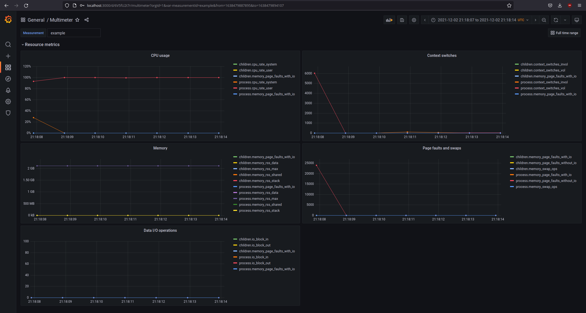
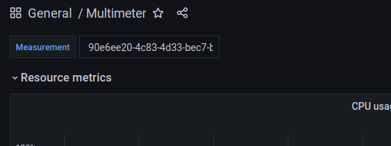
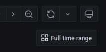

Visualization🔗
Multimeter brings with it a script for setting up a visualization, that allows to display the measured values. This visualization uses docker-compose to install and run its two components, InfluxDB for storing the measures values and Grafana that displays the values in dashboards.

If the multimeter package is installed using pip, it comes with its own executable
mm-visu:
$ mm-visu --help
usage: mm-visu [-h] [-c CONFIG_FILE] {install,remove,start,stop} ...
positional arguments:
{install,remove,start,stop}
sub-command help
install Create the necessary docker container and configure
them
remove Remove docker containers and remove the stored data
start Start the visualization
stop Stop the visualization
optional arguments:
-h, --help show this help message and exit
-c CONFIG_FILE, --config CONFIG_FILE
The file where the config for the visualization is
stored. (default:
/home/<user>/.multimeter/visu.config.json)
If multimeter is used from source, the visualization script has to be run as a python module:
$ python3 -m multimeter.visualization --help
usage: visualization.py [-h] [-c CONFIG_FILE] {install,remove,start,stop} ...
Install🔗
Before the visualization can be used its components need to be installed. This is done by running the 'install' command of the script:
$ mm-visu install --help
usage: mm-visu install [-h] [-d DATA_DIR] [-o ORG] [-b BUCKET]
optional arguments:
-h, --help show this help message and exit
-d DATA_DIR, --dir DATA_DIR
The directory where the data will be stored.
-o ORG, --org ORG The organization in influx.
-b BUCKET, --bucket BUCKET
The bucket in influx for storing measurements.
The install command takes some optional arguments:
- DATA_DIR: The directory where the measurement data in InfluxDB will be stored. If no
directory is given, the data will be stored within the users HOME directory.
- ORG: All data in InfluxDB has to be assigned to an organization. The given
organization automatically created during installation. It defaults to 'kantai'.
- BUCKET: InfluxDB uses the concept of buckets for organizing data. The visualization
uses a specific bucket, that be defined during install. If nothing is given, the
bucket 'multimeter' is used.
Once mm-visu install is being run, it downloads the required docker images, sets up
the containers for running them, configures the applications according to the given
values and loads some examples. At the end, it prints out some pointers on how to use
the visualization:
...
Visualization successfully set up.
Example dashboard:
http://localhost:3000/d/6V5fU2t7r/multimeter?orgId=1&var-measurementId=example&from=1638479887312&to=1638479894580
Default username/password: admin/admin
Database UI:
http://localhost:8086/
Default username/password: admin/admin123
Stop & Start🔗
Once installed, the visualization is automatically run. It can be explicitly stopped
and started again without reinstalling by calling mm-visu stop or mm-visu start.
Remove🔗
Once the visualization is no longer needed, it can completely removed. This is done
by calling mm-visu remove. This removes the created docker container and additionally
deletes the data directory, where the measured values are stored.
Using the visualization🔗
Once installed, the visualization can be accessed using the URL of example dashboard.
The dashboard shows the values that were gathered using the
ResourceProbe. New measurements can be automatically stored in
the database using the InfluxDBStorage:
meter = Multimeter(ResourceProbe(), storage=InfluxDBStorage(
token='<my-token>',
))
with meter.measure(identifier='<my-identifier>') as measurement:
# code to measure
The measurement identifier is used for loading measurement results in the visualization:

Limiting the time range to the range in which the measurement had happened, can be done by clicking the "Full time range" link:

Troubleshooting🔗
When I run the script, I get an error about missing 'docker-compose'?🔗
The uses docker-compose to install and run the individual container that work together
as the visualization. Please follow
https://docs.docker.com/compose/install/
to install 'docker-compose' and make sure that the 'docker-compose' binary is
available in the $PATH environment variable.